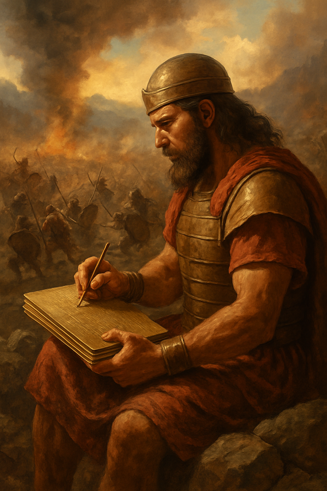

Introduction
This entry explores how authors and redactors like Nephi, Mormon, and Moroni shaped the Book of Mormon. It also covers how Joseph Smith translated the record through divine means. These processes are deeply spiritual and purposeful, and understanding them has changed how I approach scripture study.

Authors and Redactors
In the first nine chapters of 1 Nephi, Nephi carefully selected stories and teachings from other records and shaped them to highlight faith in God. For example, in 1 Nephi 6:1–6, he intentionally leaves out family history to focus on spiritual messages that help people believe in Christ.
Mormon also redacted his sources. In 3 Nephi 5:7–20, he tells us he made the record with his own hands and selected content that emphasized God’s work among the people. In Alma 11, he includes a detailed description of weights and measures to help readers understand the bribe Zeezrom offered—showing the depth of corruption and temptation faced by the righteous.
“Redactors didn’t just preserve history—they shaped it to help us see Christ more clearly.”
Moroni, too, shaped the narrative by inserting his own warnings during the Jaredite story. He hoped we wouldn’t miss the application of ancient warnings to our own lives today.
Mosiah 23 and Personal Reflection
In Mosiah 23, Mormon’s redaction is clear. He condenses long stories, highlights Alma’s faith during trials, and emphasizes spiritual governance. This helped me see how redaction can strengthen spiritual messages instead of just providing facts.
The principle that stood out to me: redactors left out or included things to help readers come unto Christ. I want to follow that example in how I study and teach—focusing on what helps people grow spiritually.
Translation of the Book of Mormon
Joseph Smith initially tried to translate the gold plates through secular means, like copying characters for scholars. Later, he used divine instruments—like the seer stone—receiving revelation word by word.

He dictated the translation while a scribe wrote it down, showing he relied on the gift and power of God. The idea of “tight” vs. “loose” control helped me understand different views of the process: tight control suggests word-for-word accuracy, while loose control allows more expression. Both views help me appreciate the divine and human effort in translation.
The Book of Mormon went through several changes: the 1830 edition added punctuation, the 1837 and 1840 editions included grammatical and clarifying edits by Joseph. Orson Pratt’s 1879 version introduced chapters and verses, and the 1920 edition standardized the text under James Talmage’s committee. This long process shows care and reverence in preserving the text.
Personal Application
- I’ll try to shape my thoughts and journal entries to focus on Christ, like the redactors did.
- I’ll remember that spiritual growth and understanding can be both divine and messy—and that’s okay.
- I’ll keep learning patiently, trusting that God uses my imperfect efforts to teach me truth.